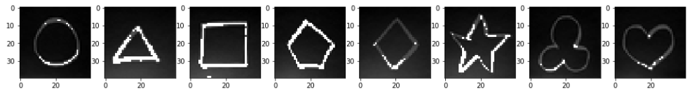
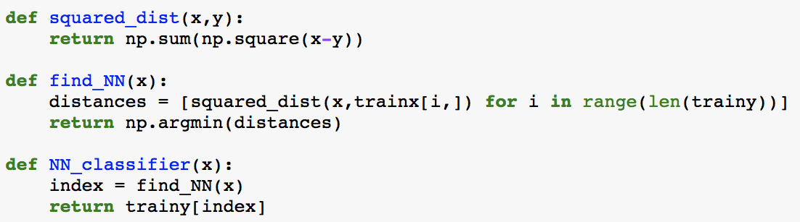
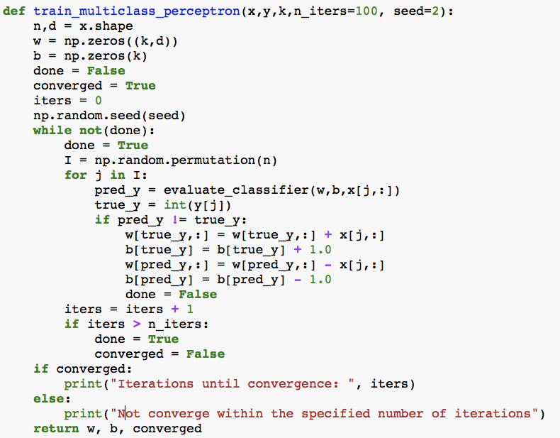
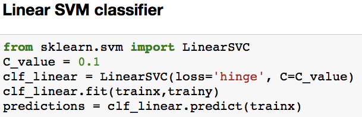
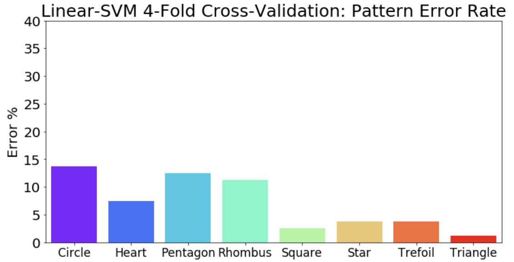
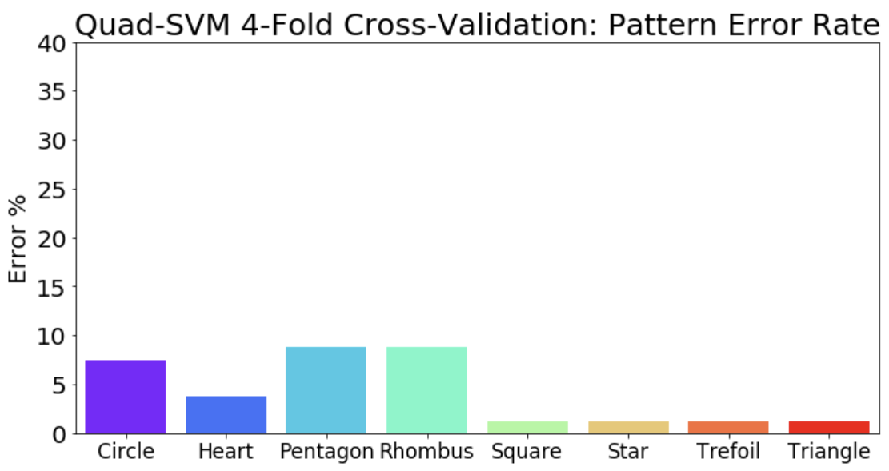
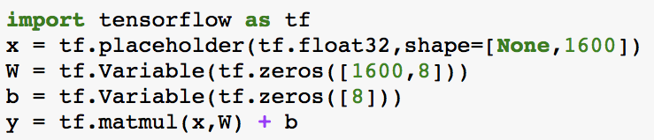

Shape Recognition: Machine Learning Project 
-- Can we train machines to recognize different shapes?
What is Machine Learning?
Machine learning is a field in computer science that uses statistical techniques to enables computer systems to
Machine learning is usually advantageous in complex systems where traditional algorithmic methods cannot be easily or even possibly defined.
Data is usually separated into Training set where inputs and outcome (or labels, response, expectations) are known beforehand and Test set where the computers are expected to predict the outcome based on the input.
Where do we use Machine Learning?
- Spam Detection
- Audio/Visual Recognition --> Shape Recognition is our focus!
- Web Search Engine
- Autonomous Driving
- Fundamental Research in Science
Data Acquisition:
Collecting useful and clean data proves to be a challenging task. For the current project, we have asked 10 volunteers to draw a total of 640 shapes.
Every participant needs to draw 8 shapes for each of the following eight categories: (Circle), Triangle, (Square), Pentagon, Rhombus, (Star), Trefoil, (Heart)
All Images are taken by iPhone (initial total size = 543.4 MB) and then processed into grayscale, dimensionally-reduced numpy packages. (final size = 8.2 MB)
-
Selected unprocessed raw images:

-
Grayscaled images using Python Imaging Library (PIL): --> for the moment, color is not a feature!

-
Dimensionality reduction of images from 2448 X 2448 = 5992704 pixels to 40 X 40 = 1600 pixels:
 -
Flattening these images as two numpy arrays/packages, data and label :
data.npy label.npy label dictionaryDimensions: data.shape = (640, 1600), label.shape = (640,)
PS: Be free to download and use the datasets. I also developed additional datasets with much-reduced dimensions of 25 X 25 = 625 : data_DIM625.npy label_DIM625.npy
{kind=link}
Train Test Split:
We need to divide all the data and label into training set and test set. Then, machine can be trained by various methods on the training set to make predictions on the test set.
If the computer is trained with the knowledge of labels, then it is supervised learning. Otherwise, it is called unsupervised learning. For this project, most methods I show here will be in the former category.
Test size of 0.25 is used --> test set = 160, training set = 480. Varied random seed is used to produce different masks on the test set and training set. For example,
trainx, trainy, testx, testy = train_test_split(data, labels, split_size=0.25, random_seed=1, split_window=0)
4-fold Cross Validations are done for each method. Same random seed = 2 is used.
Method 1: K-Nearest Neighbors (kNN)
kNN is probably the simpliest machine learning method.
One need first define a proper distance function to compute the relative closeness between two image arrays. Then for each test data, scan all training data to find the closest image array and return its corresponding label. For example,
Final Result: averaged error rate ~ 6.56 %, not bad at all!

Example of a misclassified pentagon: test image #118 its nearest neighbor training image #457


One can also directly use kNN from library, such as sklearn.neighbors.BallTree, sklearn.neighbors.KDTree and get the same result.
Method 2: Gaussian Generative Model (GGM)
Generative model uses statistical techniques to find the highest probable label for the test data.
Here, by learning the training data and training label, we generate a statistical multivariate Gaussian distribution for each pattern. Then, for each test data, we compute the probablity for each label according to the distribution, and pick the highest one. This is direct application of Bayes' Theorem:
$$ \text{Probablity}\Big(\text{label}=j\Big|x\Big) = \frac{\text{Probablity}(\text{label}=j)*\text{Probablity}\Big(x\Big|\text{label}=j\Big)}{\text{Probablity}(x)} \propto \text{Probablity}\Big(x\Big|\text{label}=j\Big),$$
where \(\text{Probablity}\Big(x\Big|\text{label}=j\Big)\) is the value of Gaussian distribution for label j of data x.
One can either use multivariate Gaussian from library from scipy.stats import multivariate_normal or define your own:

Final Result: averaged error rate ~ 1.25 %, significant improvement!

Method 3: Multi-class Perceptron (MP)
Perceptron algorithm uses basic linear algebra. It predicts the label by evaluating the sign of a linear estimator function. For instance of a simple binary classification problem, we define
$$ y = W \cdot \vec{x} + b, \text{ where $W$ is the weight matrix, $\vec{x}$ is an instance from the data, $b$ is the bias.} $$
The predicted label = \(\text{sign}(y)\), and the loss function = \(\text{sign}(y)\) - label, for each data x. We can find the optimal \(W\) and \(b\), by using gradient descent method.
What we have is a multi-class (8 classes) classification problem, so the Perceptron algorithm is extended to find and return the label with the highest score. One possible estimator can be:

Then we can train the Perceptron on the training set using gradient descent. One important note: For more complicated data, one might need to use other variants of gradient descent to speed up the training, such as Stochastic gradient descent or mini-batch Stochastic gradient descent.
Keep track of our dimensions: w.shape = (8, 1600), b.shape = (8)
Final Result: averaged error rate ~ 8.75 %, convergences of training set is 9 - 12 iterations, surprisingly fast!

Method 4: Support Vector Machine (SVM)
In a nutshell, SVM is an advanced version of Perceptron algorithm, where margin between labels is maximized. The optimization requires the loss function to be a convex function, which is true for most machine learning scenarios.

The beauty of SVM method is that the final result only depends on the "support vectors", the points on the margins of the decision boundary.
The process can be sped up substantially, using Dual Form of the algorithm, with much reduced dimensionality.
One can also use Kernel trick to classify data with quadratic decision boundaries or even higher degree polynomial, as in our quadratic SVM approach below.
The penalty for misclassified points can be tuned via a "slack" variable to improve the performance.

Final Results: Linear SVM averaged error rate ~ 7.03 % Quadratic SVM averaged error rate ~4.22 %
 Method 5: Artificial Neural Network, with TensorFlow
TensorFlow is an amazing open source machine learning framework developed by Google for high performance numerical computation. It excels at computing neutral networks.
In our brain, every neuron is connected with many more neurons. Each neuron process the signals from previous neurons and relay the signal to neurons in the next layer, and so forth.

Neutral network is inspired directly by how neurons pass signals in our brain. In a naive analogy, weights are the length of nerve fiber (axon), activation functions are like the action potential to excite synaptic connections, and so forth.
Here, I will mainly focus on Densely-connected Neural Network (DNN). It is dense because every node is connected to every node in the next layer. The internal layer \( z_i = \sum_j W_{i,j} x_j + b_i\) and final output layer \( y =\text{softmax}(\vec{z})_i = \frac{\text{exp}(z_i)}{\sum_j \text{exp}(z_j)} \).

Creating variables, placeholders, and operations:
Setting loss function and optimizer:

Training, with maximum 2000 steps, feeding batch size = 10,

Final Results: Accuracy stablizes after 650 steps, accuracy rate ~ 84.38 %

Another popular method is CNN, short for Convolutional Neural Network. The idea is to render image as two dimensional array similar to how our eyes perceive things. In this way, information of neighboring points is saved. Then, apply various filters and train the machine at each layer.
The advantage is phenomenal. CNN accuracy stablizes after around 700 steps, accuracy rate ~ 99.38 %, fluctuations due to batch size.
Feel free to contact me at wyqian1027 at gmail if you have any questions or suggestions.